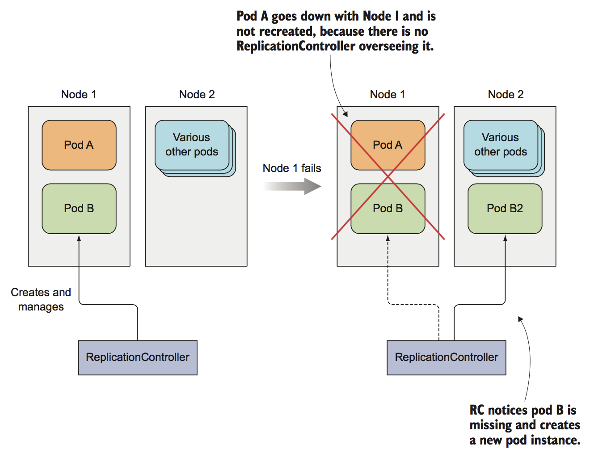
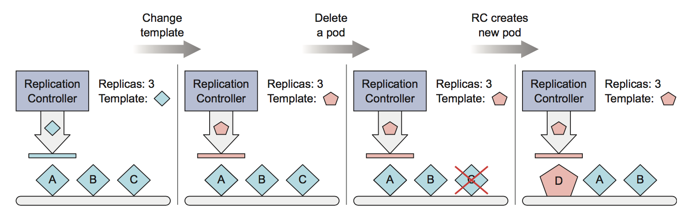

ReplicaController
了解 ReplicaController
ReplicaController 是一种Kubernetes资源，也叫副本控制器，可确保它的pod始终保持运行状态。如果pod 因任何原因消失(比如节点从集群中消失、节点故障、内核bug修复或因节点压力大，该pod被驱逐等原因)，则 ReplicaController 会监测到缺少了pod，并创建一个新的pod替代，保证数量上满足 ReplicaController 中的期望值。 
ReplicaController 操作
ReplicaController 会持续监控正在运行的pod列表， 并保证相应"类型"的pod的数目与期望值相符。如果发现正在运行的 ReplicaController 的副本(pod)数太少，它会根据pod模板创建新的副本。相反，如果正在运行的pod太多，它将删除多余的pod。比如：
- 有人手动创建相同类型的pod；
- 有人更改pod的类型；
- 有人减少所需pod的副本数量等；
所以，ReplicaController 的工作就是确保pod的数量始终与其标签选择器匹配。如果不匹配， 则 ReplicaController将根据所需，采取适当的操作来协调pod的数量，如下图显示了 ReplicaController 的操作流程：

ReplicaController 的组成
一个ReplicaController有三个主要组成部分
label selector (标签选择器), 用于确定 ReplicaController 作用域中有哪些 pod，也可以理解成pod选择器
replica count (副本数)， 用于指定应该运行的 pod 数量
pod template (pod 模板)，用于描述创建新的 pod 副本
ReplicaController 创建
创建一个 副本数为 3 个pod的 ReplicationController，名称是为 nginx。
# kubia-rc.yaml
apiVersion: v1
kind: ReplicationController
metadata:
name: kubia
spec:
replicas: 3
selector:
app: kubia
template:
metadata:
labels:
app: kubia
spec:
containers:
- name: kubia
image: luksa/kubia
imagePullPolicy: IfNotPresent
ports:
- containerPort: 8080
$ kubectl create -f kubia-rc.yaml
$ kubectl describe replicationcontrollers/kubia
$ pods=$(kubectl get pods --selector=app=kubia --output=jsonpath={.items..metadata.name})
$ echo $pods
删除 pod
$ kubectl delete pod xxx
$ kubectl get pods --selector=app=kubia
如果一个pod消失， ReplicaController 将发现当前pod的数量小于ReplicaController的副本数，则新建pod；

节点故障
在worker节点上手动停掉节点上的kubelet，或者断网、重启等
# systemctl stop kubelet
在master节点上,查看是否有故障node:
$kubectl get node
查看当前状态下的pod， 等待几分钟
将pod移入或移出 ReplicaController
如果你手动修改了一个pod的标签， 使它不再匹配 ReplicaController 了，那么该pod 就变得和其它手动创建的pod一样了，不再被任何 Controller 管理。而原 ReplicaController 发现少了个 pod，并启动一个新的pod替换它。 给ReplicaController管理的pod添加标签
$ kubectl label pod kubia-xxx type=debug
$ kubectl get pod --show-labels
给其中一个pod添加了一个新的 type=debug 标签之后， 对于ReplicaController来说，是没有发生任何更改的； 更改ReplicaController中pod的标签
$ kubectl label pod kubia-xxx app=foo --overwrite
PS
--overwite 参数是必要的，否则kubectl 会输出警告信息，而不会实际更改标签
更改之后，查看当前pod的状态：
$ kubectl get pod -L app
你会发现存在四个pod， 其中有一个是脱离组织的，不被ReplicaController管理的pod，其它三个仍然是。因为当把pod的标签从app=kubia更改为app=foo之后， ReplicaController 就不管这个pod了。但是由于 ReplicaController的副本数为3， 为了满足副本数需求，则新建了一个pod；被孤立的pod 变成了bare pod，它会一直运行，直到你手动删除它，或者因其它原因被删除；

思考： 如果更改了 ReplicaController 的标签选择器， 后果会怎么样？
修改 pod 模板
pod的模板是可以随意修改的，但是不能使其pod 立马生效，需要将旧的pod删除，新的pod才会应用新的模板；
$ kubectl edit rc kubia
为 kubia 新增一个标签，保存退出后，查看pod并未有新的标签，只有删除后新建的pod才会看到新加的标签；

PS
可以通过修改 KUBE_EDITOR 环境变量来告诉kubectl 使用不同的编辑器，比如使用nano编辑器的话：
export KUBE_EDITOR="/usr/bin/nano".
不特殊设置的话，采用默认编辑器。
水平伸缩 pod
ReplicaController 可以保证持续运行的pod实例数与期望的副本数保持一直，那么，也可以通过修改 ReplicaController 中的replicas字段的值，来动态修改 pod的副本数，更改之后， ReplicaController 将会根据 replicas字段的值来调整当前pod的状态，或删除或新建。有两种方式实现此目的。
扩容
1.通过命令行直接修改：
$ kubectl scale rc kubia --replicas=10
2.通过编辑配置文件:
$ kubectl edit rc kubia
spec:
replicas: 10 //change 3 to 10
selector:
app: kubia
查看修改后的rc结果：
$ kubectl get rc
NAME DESIRED CURRENT READY AGE
kubia 10 10 4 21m
缩容
$ kubectl scale rc kubia --replicas=3
删除一个 ReplicaController
通过如下命令可以删除一个rc，但是rc下面的pod也会随之被删除；
kubectl delete rc kubia
由于通过ReplicaController 创建的pod 并 不属于ReplicaController的组成部分，只不过是由其进行管理，因此可以只删除rc，而不删除pod。
kubectl delete rc kubia --cascade=false
cascade级联删除参数的默认值是true。这样你就可以只删除rc而不删除pod了。
 应用场景
应用场景
比如，rc的spec中某些字段不让修改或patch， 那么可以通过关闭级联删除选项时删除旧的rc，然后修改rc的yaml后，重新创建该rc，它就会依然和之前的pod进行关联起来；
RC 的不足之处
- 单个RC无法将pod与标签 env=devel,env=prod 同时匹配，只能匹配 env=devel的pod，或者 env=prod的pod。
- RC无法根据pod标签名进行进行匹配pod